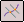

Construct an intersection point
-
Choose Surfacing tab→Surfaces group→Intersection Point

. -
Using the selection options on the command bar, select the elements you want to include in the first selection set and then click the Accept (check mark) button.
-
Select the elements you want to include in the second selection set and then click the Accept (check mark) button.
-
Finish the feature.